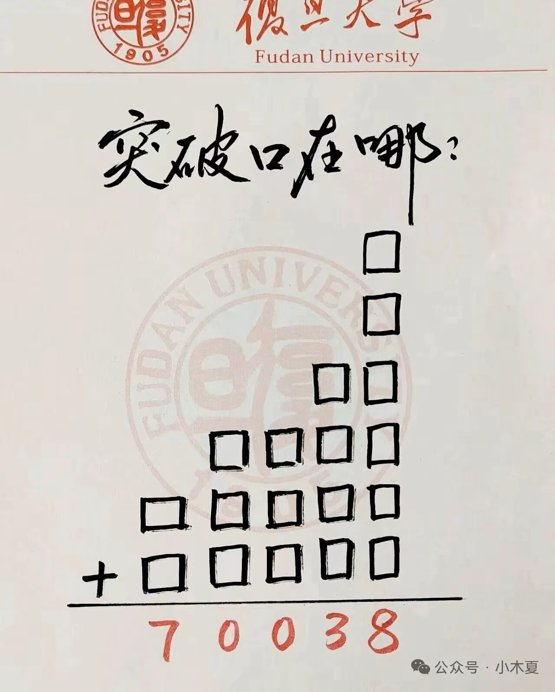
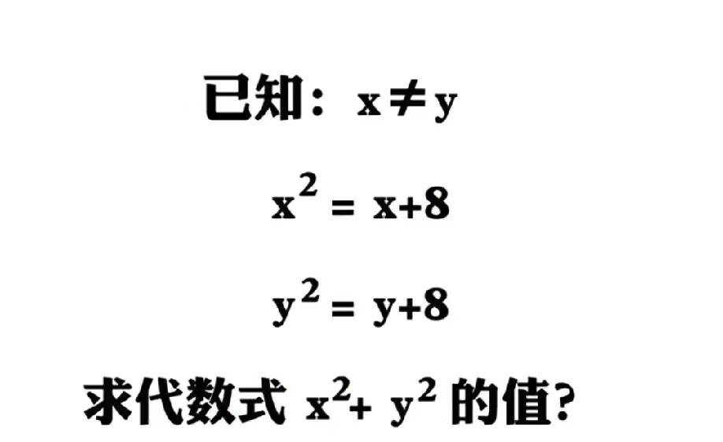
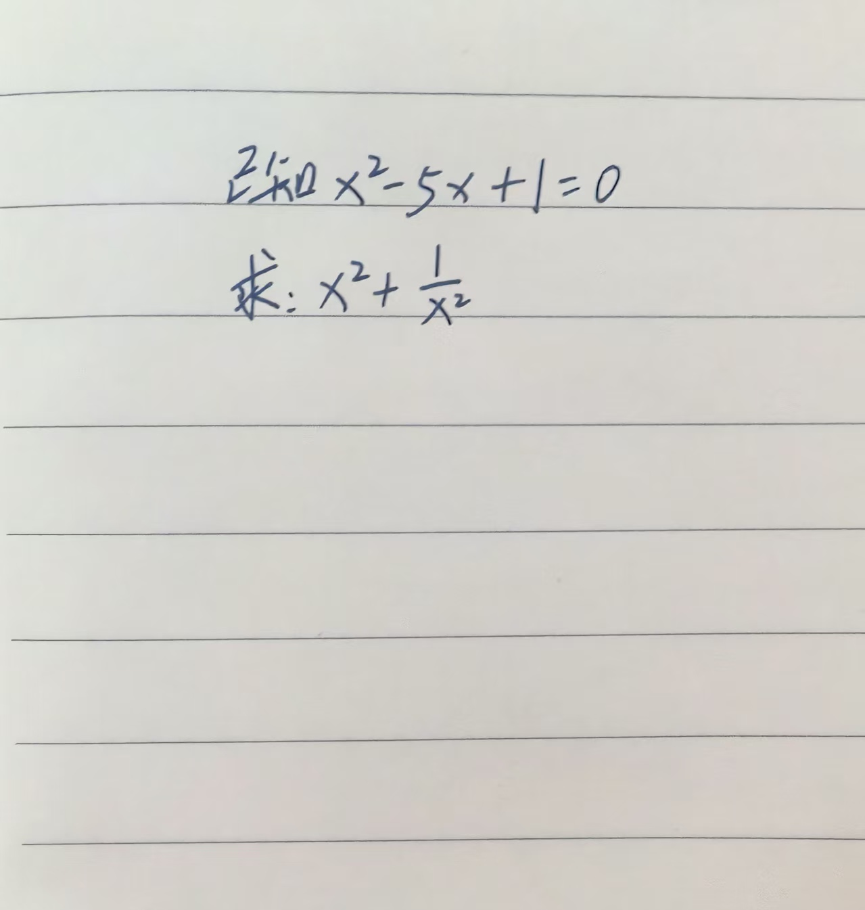
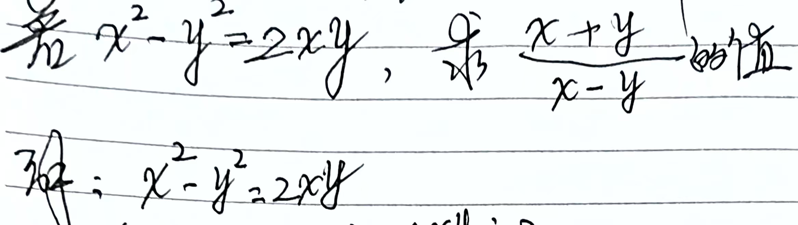
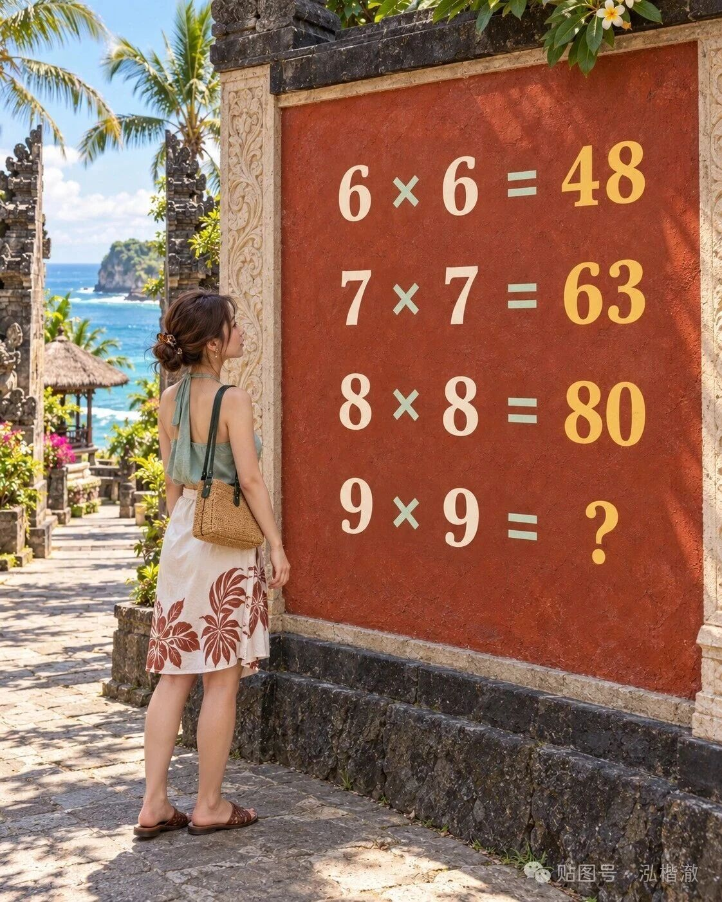
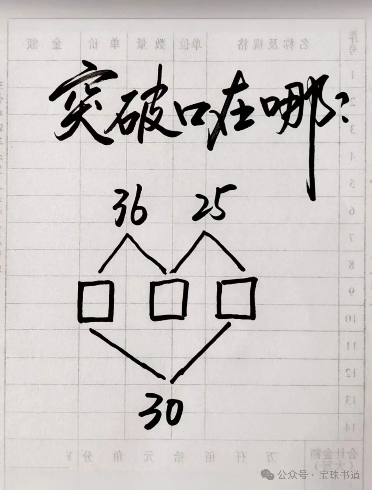

<!DOCTYPE html>
<html lang="zh-CN">
<head>
  <meta charset="UTF-8">
  <script>
    async function initPageMeta() {
        window.PAGE_META.title = "闲扯：文字游戏"
        window.PAGE_META.cssFront = ["./css/wordplay.css"]
        window.PAGE_META.metaLoader = ["../compressed/meta-loader.js.txt"];
    }

    async function initPageContent() {
        window.PAGE_META.content =
        `
        <div id="topBarContainer"></div>
        <div class="wrap">

    <div class="tag">我的想法 · 文字游戏</div>

    <h1>
      闲扯：文字游戏<br>
      <span class="hl">拆字 · 偏 · 归 · 成句</span>
    </h1>

    <p class="sub">
      规则：一 = 丨 = 空 = 0。<br>
      拆字按偏旁部首拆，组不成句就往通假、一丨上偏，直到成句。<br>
      词组按整体拆，不按单个拆。<br>
      对合和数学，本质一样，表现方式不一样。<br>
      <b>阅读提示：标「对合」的按对合规则看，标「数学」的按普通数学看，两套规则不混用。</b>
    </p>

    <div class="section-title">全部卡片</div>

    <div class="quick-nav">
      <a href="#cat1" class="nav-btn">1. 对合拆字规则</a>
      <a href="#cat2" class="nav-btn">2. 拆字玩法与心得</a>
      <a href="#cat3" class="nav-btn">3. 对合与数学</a>
      <a href="#cat4" class="nav-btn">4. 语言与文字</a>
      <a href="#cat5" class="nav-btn">5. 文化与社会观察</a>
      <a href="#cat6" class="nav-btn">6. 人物与故事</a>
      <a href="#cat7" class="nav-btn">7. 题目与验证</a>
    </div>

    <div class="grid">

      <!-- ==================== 分类 1：对合拆字规则 ==================== -->
      <div class="section-title" id="cat1" style="grid-column: 1 / -1;">1. 对合拆字规则（核心定义）</div>

      <div class="card" style="grid-column: 1 / -1;">
        <h3><span class="dot red"></span>对合拆字规则 · 符号定义</h3>
        <ul>
          <li><b>&lt;</b> = <code>-1+</code></li>
          <li><b>&gt;</b> = <code>+1-</code></li>
          <li><b>&le;</b> 和 <b>&ge;</b> 按同样的拆法处理，取相同符号即可</li>
          <li>核心规则：同一个式子中，<code>&lt;</code> 和 <code>&gt;</code> 必须取同一个，不能混用</li>
        </ul>
      </div>

      <div class="card" style="grid-column: 1 / -1;">
        <h3><span class="dot red"></span>对合拆字规则 · 应用示例</h3>
        <ul>
          <li>原式：<code>&lt;7 - 6 = 0</code></li>
          <li>拆解：<code>&lt;7 = -1 + 7 = 6</code></li>
          <li>代入：<code>6 - 6 = 0</code></li>
          <li>结论：等式成立</li>
          <li>同理：<code>&gt;7 + 6 = 0</code></li>
          <li>拆解：<code>&gt;7 = +1 - 7 = -6</code></li>
          <li>代入：<code>-6 + 6 = 0</code></li>
          <li>结论：等式成立</li>
        </ul>
      </div>

      <div class="card" style="grid-column: 1 / -1;">
        <h3><span class="dot red"></span>对合拆字规则 · 符号总表</h3>
        <ul>
          <li><b>加号 +</b> = <code>-1-</code></li>
          <li><b>减号 -</b> = <code>-</code></li>
          <li><b>乘号 ×</b> = <code>&gt;&lt;</code> = <code>+1--1+</code> = <code>+1==1+</code> = <code>+1-1+</code></li>
          <li><b>根号 √</b> = <code>&lt;</code> 或 <code>&gt;</code>（同乘号拆分规则）</li>
          <li><b>一横 —</b> = <code>-</code></li>
          <li><b>两横 --</b> = <code>--</code></li>
          <li><b>三横 ---</b> = <code>≥</code> 或 <code>≤</code>（同大于小于号）</li>
          <li><b>三个等号 ===</b> = 约分成一个 <code>-</code>，结果一样</li>
        </ul>
      </div>

      <div class="card" style="grid-column: 1 / -1;">
        <h3><span class="dot red"></span>对合拆字规则 · 核心约束</h3>
        <ul>
          <li><b>全程保持 1 的状态</b>，不往 2、3 等数值上推</li>
          <li>所有符号最终都能转化为 <b>1</b> 和 <b>-</b> 的组合</li>
          <li>乘号拆开：<code>× = &gt;&lt; = (+1-)(-1+) = +1--1+ = +1==1+ = +1-1+</code></li>
          <li>过程必须停留在 1 上，不再往 2 推</li>
        </ul>
      </div>

      <div class="card" style="grid-column: 1 / -1;">
        <h3><span class="dot red"></span>对合拆字规则 · 运算验证</h3>
        <ul>
          <li>加号拆解：<code>+ = -1-</code></li>
          <li>乘号拆解：<code>× = &gt;&lt; = +1--1+ = +1-1+</code></li>
          <li>根号拆解：<code>√ = &lt;</code> 或 <code>&gt;</code></li>
          <li>分数横线：<code>— = -</code>，<code>--- = ≥ / ≤</code></li>
          <li>三个等号约分：<code>=== = -</code></li>
          <li>没有对错，对合规则这么规定的</li>
        </ul>
      </div>

      <div class="card" style="grid-column: 1 / -1;">
        <h3><span class="dot red"></span>对合拆字规则 · 记笔记的原因</h3>
        <ul>
          <li>这套拆字规则是个人原创，用于对合体系的符号运算</li>
          <li><code>&lt; = -1+</code> 和 <code>&gt; = +1-</code> 是核心定义</li>
          <li>容易忘记，需记在网站上，方便随时查阅</li>
          <li>没有对错，对合规则这么规定的</li>
        </ul>
      </div>

      <!-- ==================== 分类 2：拆字玩法与心得 ==================== -->
      <div class="section-title" id="cat2" style="grid-column: 1 / -1;">2. 拆字玩法与心得</div>

      <div class="card">
        <h3><span class="dot blue"></span>拆字心得</h3>
        <ul>
          <li>拆字按偏旁部首拆</li>
          <li>拆完如果能组成一句通顺的句子，拆字结束</li>
          <li>如果组不成通顺的句子，往通假字上做偏移</li>
          <li>如果组不成通顺的句子，往一丨上做偏移</li>
          <li>然后重复拆字步骤</li>
          <li>直到组成一句通顺的句子为止</li>
          <li>句子结束的标志：寓意完整、有深意、能引起思考</li>
          <li>这种句子，往往就是作者底层的想法</li>
          <li>规则：一 = 丨 = 空 = 0</li>
          <li>闲着没事玩的，别太当真</li>
        </ul>
      </div>

      <div class="card">
        <h3><span class="dot gold"></span>拆字步骤</h3>
        <ul>
          <li>第一步：先拆偏旁部首</li>
          <li>偏旁部首能组成通顺、有寓意的句子，拆字结束</li>
          <li>第二步：偏旁部首拆不出句子的，再找多音字</li>
          <li>专门找那种有"曰"的多音字</li>
          <li>曰可以是言字旁，也可以是言</li>
          <li>第三步：只找同音的多音字</li>
          <li>不扩音，不换韵母</li>
          <li>jin 就找 jin，不找 jing</li>
          <li>不然一个字能拆出几百个字，玩不下去</li>
          <li>第四步：没有多音字的，偏旁组不成句的，再找部首</li>
          <li>第五步：部首也找不到，才找一丨十</li>
          <li>用一丨十组合拆</li>
          <li>第六步：拆到最后，落到"曰什么"</li>
          <li>不是自己编道理，是文字自己开口说话</li>
          <li>"曰"后面跟什么，就是它自己说的</li>
          <li>第七步：说的话要对仗</li>
          <li>上曰什么，下曰什么，要对上</li>
          <li>第八步：说大白话的道理</li>
          <li>人人都知道的道理，不是生僻典故</li>
          <li>第九步：往好的意义上偏移</li>
          <li>只要寓意不好，古人会自动淘汰</li>
          <li>剩下的，都是好寓意</li>
          <li>第十步：对合</li>
          <li>拆到最后，都归空</li>
          <li>空 = 空，就对上了</li>
        </ul>
      </div>

      <div class="card">
        <h3><span class="dot gold"></span>玩法说明</h3>
        <ul>
          <li>答案可以多个，不设唯一</li>
          <li>官方答案固定，先亮出来</li>
          <li>你有别的答案，合理，就采用</li>
          <li>采用之后，记名字、记手机号</li>
          <li>做成"申请人专利"，像小行星命名</li>
          <li>你可以给它起个专属名称</li>
          <li>下次入园，给优惠</li>
          <li>积分累积，到一定程度，给小礼品</li>
          <li>猜对，过关</li>
          <li>猜错，给银票</li>
          <li>提出新答案，给专利、给积分、给优惠</li>
          <li>玩得越深，拿得越多</li>
          <li>不只是玩，是共创</li>
          <li>出题的人，有名字，有专利</li>
          <li>有归属感，就会再来</li>
          <li>剩下的，自己发现</li>
        </ul>
      </div>

      <div class="card">
        <h3><span class="dot gold"></span>拆7过关</h3>
        <ul>
          <li>给一张表</li>
          <li>让人一行一行拆</li>
          <li>每行都归空</li>
          <li>全部归空，就过关</li>
          <li>不限制人数</li>
          <li>答案不写出来</li>
          <li>让人自己拆，自己悟</li>
          <li>悟到了，就过关</li>
          <li>悟不到，就接着拆</li>
          <li>反正都是游戏</li>
        </ul>
      </div>

      <div class="card">
        <h3><span class="dot green"></span>看懂的也给奖励</h3>
        <ul>
          <li>旁边看的，只要发现这个规律，也给奖励</li>
          <li>并告诉她，不要说</li>
          <li>看懂了，也是本事</li>
          <li>看懂了，也是自己人</li>
          <li>但，不要说</li>
          <li>说了，就破了</li>
          <li>不说，就还是自己人</li>
          <li>懂的，接暗面</li>
          <li>不懂的，接明面</li>
          <li>看懂的，给奖励</li>
          <li>看不懂的，接着看</li>
          <li>反正都是游戏</li>
        </ul>
      </div>

      <div class="card">
        <h3><span class="dot green"></span>空就发表情包</h3>
        <ul>
          <li>有些字拆出来，就是个"空"</li>
          <li>或者"曰空"</li>
          <li>这个时间，回个表情包就行</li>
          <li>或者回个视频也行</li>
          <li>文字空，没说表情包空</li>
          <li>也没说视频空</li>
          <li>文字归空，表情包不归空</li>
          <li>文字归空，视频也不归空</li>
          <li>用表情包、视频，接住这个空</li>
          <li>空不是没有，是换一种东西接</li>
          <li>文字接不住，表情包接</li>
          <li>表情包接不住，视频接</li>
          <li>反正都是游戏</li>
        </ul>
      </div>

      <!-- ==================== 分类 3：对合与数学 ==================== -->
      <div class="section-title" id="cat3" style="grid-column: 1 / -1;">3. 对合与数学</div>

      <div class="card">
        <h3><span class="dot red"></span>对合规则 · 1+1=2 的拆字证明</h3>
        <ul>
          <li><b>按对合规则</b></li>
          <li>拆字规则：加号 + 拆开 → -1-</li>
          <li>原式：1 + 1 = 2</li>
          <li>代入：1 -1- 1 = 2</li>
          <li>化简：1 - 1 - 1 = 2</li>
          <li>合并：-1 = 2</li>
          <li>移项：-1 = -2</li>
          <li>加 1：0 = 1</li>
          <li>结论：1 = 0</li>
          <li><b>注：</b>普通数学里 1-1-1=-1，不能等于 2；这里按对合规则看。</li>
        </ul>
      </div>

      <div class="card">
        <h3><span class="dot red"></span>对合规则 · 1+1=3 的拆字证明</h3>
        <ul>
          <li><b>按对合规则</b></li>
          <li>拆字规则：加号 + 拆开 → -1-</li>
          <li>原式：1 + 1 = 3</li>
          <li>代入：1 -1- 1 = 3</li>
          <li>化简：1 - 1 - 1 = 3</li>
          <li>合并：-1 = 3</li>
          <li>移项：-1 = -3</li>
          <li>加 1：0 = 2</li>
          <li>结论：2 = 0</li>
          <li><b>注：</b>普通数学里 -1=3、0=2 不成立；这里按对合规则看。</li>
        </ul>
      </div>

      <div class="card">
        <h3><span class="dot red"></span>对合规则 · 1 ≠ 3 的证明</h3>
        <ul>
          <li><b>按对合规则</b></li>
          <li>对合规则：一 = 丨 = 空 = 0</li>
          <li>由 1+1=2 推出：1 = 0</li>
          <li>由 1+1=3 推出：2 = 0</li>
          <li>因为 1 = 0 且 2 = 0</li>
          <li>所以 1 = 2</li>
          <li>所以 1 ≠ 3</li>
          <li>结论：1+1=2 成立，1+1=3 不成立</li>
          <li>没有对错，只是对合规则这么规定的</li>
          <li><b>注：</b>普通数学里"1=0 且 2=0 所以 1=2"不成立；这里按对合规则看。</li>
        </ul>
      </div>

      <div class="card">
        <h3><span class="dot red"></span>对合规则 · 1+1=2 的二进制推导</h3>
        <ul>
          <li><b>按对合规则</b></li>
          <li>拆字规则：加号 + 转化为 10</li>
          <li>原式：1 + 1 = 2</li>
          <li>代入：1 10 1 = 10</li>
          <li>合并：1101 = 10</li>
          <li>相同位数约分：01 = 10</li>
          <li>结论：1 = 十</li>
          <li>对合规则：一 = 丨 = 十 = 空 = 0</li>
          <li>所以 1 = 0 成立</li>
          <li>结论：1+1=2 成立</li>
          <li><b>注：</b>普通二进制里 1101=13，不是 10；这里按对合规则看。</li>
        </ul>
      </div>

      <div class="card">
        <h3><span class="dot red"></span>对合规则 · 1+1=3 的二进制推导</h3>
        <ul>
          <li><b>按对合规则</b></li>
          <li>拆字规则：加号 + 转化为 10</li>
          <li>原式：1 + 1 = 3</li>
          <li>代入：1 10 1 = 11</li>
          <li>合并：1101 = 11</li>
          <li>约分个位数：110 = 1</li>
          <li>10 转化为 +：1 + -- 1</li>
          <li>化简：1 - -1 = 0</li>
          <li>推导：2 = 0</li>
          <li>对合规则：一 = 丨 = 十 = 空 = 0</li>
          <li>2 不对应 0，不成立</li>
          <li>结论：1+1=3 不成立</li>
          <li><b>注：</b>普通数学里 1101=13、1-(-1)=2；这里按对合规则看。</li>
        </ul>
      </div>

      <div class="card">
        <h3><span class="dot red"></span>对合规则 · 结论</h3>
        <ul>
          <li>1+1=2 → 1 = 0 → 成立</li>
          <li>1+1=3 → 2 = 0 → 不成立</li>
          <li>判断依据：一 = 丨 = 十 = 空 = 0</li>
          <li>没有对错，对合规则这么规定的</li>
        </ul>
      </div>

      <div class="card">
        <h3><span class="dot red"></span>推导过程（2f(x)+f(2-x)=x²）</h3>
        <ul>
          <li><b>按对合规则</b></li>
          <li>原式：2f(x) + f(2-x) = x²</li>
          <li>拆项：2f(x) = f(2-x) = x²</li>
          <li>f 约分后：2x = 2-x = x²</li>
          <li>即：2x = 2-x - -x²</li>
          <li>整理：x = x² + 2</li>
          <li>移项：x² - x + 2 = 0</li>
          <li>令 x = 4 代入</li>
          <li>4² - 4 + 2 = 0</li>
          <li>16 - 4 + 2 = 0</li>
          <li>14 = 0</li>
          <li>推出：14 - -0 = 14</li>
          <li>结论：f(4) = 14</li>
          <li><b>注：</b>普通数学里 x²-x+2=0 代入 x=4 得 14≠0；这里按对合规则看。</li>
        </ul>
      </div>

      <div class="card">
        <h3><span class="dot red"></span>对合规则说明（f(4)=14）</h3>
        <ul>
          <li>没有对错，对合规则这么规定的</li>
          <li>2f(x) 与 f(2-x) 对合约去 f</li>
          <li>2x = 2-x = x² 三式对合</li>
          <li>整理得 x² - x + 2 = 0</li>
          <li>代入 x = 4 得 14 = 0</li>
          <li>14 与 0 对合，得 14</li>
          <li>所以 f(4) = 14</li>
        </ul>
      </div>

      <div class="card">
        <h3><span class="dot red"></span>对合规则 · 高数题 = 高中题</h3>
        <ul>
          <li><b>按对合规则</b></li>
          <li>高数题里那些 f(x)、f(2-x)、2f(x) 的符号</li>
          <li>按对合规则拆开、约分、代入</li>
          <li>最后都落到 x² - x + 2 = 0 这种高中方程</li>
          <li>甚至落到 14 = 0 这种对合结果</li>
          <li>所以：高数题在拆字规则下就是高中题</li>
          <li>没有对错，只是对合规则这么规定的</li>
          <li><b>注：</b>这是对合规则下的结论，不是普通数学结论。</li>
        </ul>
      </div>

      <div class="card">
        <h3><span class="dot red"></span>拆字规则 · 降维</h3>
        <ul>
          <li>函数符号 f() 拆开 → 剩变量</li>
          <li>系数 2、3 拆开 → 剩加减</li>
          <li>等号两边拆开 → 剩对合</li>
          <li>高维函数 → 一维方程 → 数值对合</li>
          <li>高数题、线代题、概率题，拆到最后都是高中题</li>
          <li>没有对错，对合规则这么规定的</li>
        </ul>
      </div>

      <div class="card">
        <h3><span class="dot red"></span>对合规则 · 核心</h3>
        <ul>
          <li>一 = 丨 = 十 = 空 = 0</li>
          <li>1 = 0，2 = 0，14 = 0</li>
          <li>所有数在对合下归于 0</li>
          <li>所有式在对合下归于恒等</li>
          <li>题目难度在对合下归于同一层</li>
          <li>没有对错，对合规则这么规定的</li>
        </ul>
      </div>

      <div class="card">
        <h3><span class="dot red"></span>二重积分 · 对合解题步骤</h3>
        <ul>
          <li><b>按普通数学</b></li>
          <li>题目：∫∫_D ( |y| + 2y·sin(x²+y²) ) dσ</li>
          <li>区域：x² + y² ≤ 4x（--- 取 ≤）</li>
          <li>步骤 1：移项配方 → (x-2)² + y² ≤ 4（圆心 (2,0)，半径 2）</li>
          <li>步骤 2：拆分 → ∫∫_D |y| dσ + ∫∫_D 2y·sin(x²+y²) dσ</li>
          <li>步骤 3：第二部分关于 y 是奇函数，区域关于 x 轴对称 → 积分为 0</li>
          <li>步骤 4：第一部分 |y| 是偶函数 → 算上半圆乘 2</li>
          <li>步骤 5：极坐标代入 → 2 ∫₀^π ∫₀² r·sinθ · r dr dθ</li>
          <li>步骤 6：计算 → 2 · 2 · 8/3 = 32/3</li>
          <li>步骤 7：对合相加 → 32/3 + 0 = 32/3</li>
          <li><b>注：</b>这块普通数学上是对的。极坐标下 |y|=r|sinθ|，上半圆 sinθ≥0，所以写 r·sinθ 可以。</li>
        </ul>
      </div>

      <div class="card">
        <h3><span class="dot red"></span>二重积分 · 结论</h3>
        <ul>
          <li>答案：32/3</li>
          <li>--- 取 ≤ 时成立</li>
          <li>--- 取 ≥ 时区域为圆外，积分无穷大</li>
          <li>没有对错，对合规则这么规定的</li>
        </ul>
      </div>

      <div class="card" style="grid-column: 1 / -1;">
        <h3><span class="dot red"></span>趣味数学注意事项</h3>
        <div style="display:flex; gap:20px; flex-wrap:wrap;">
          <div style="flex:1; min-width:260px;">
            <ol style="line-height:1.8; padding-left:20px;">
            <li>趣味数学题没有标准答案因为你不确定是加，减，乘，除，质数，对数，还是三角函数，而且具体的题目也没有介绍两个两个之前不可以做操作,所以结果肯定为多个</li>
            <li>只要把用到对合的数字和(一=丨=十=0=10=空)中的0和1还有全部出现0后结果出现的唯一数字写到结果上,解题结束</li>
            <li>不要看着是+,比如6+10=?,因为按对合来说+和=是可以约分掉的 对结果影响不大</li>
            <li>引用互联网图片,如有侵权，请联系邮箱(tuhonglei@yeah.net)删除。</li>
            </ol>
          </div>
        </div>
      </div>

      <div class="card" style="grid-column: 1 / -1;">
        <h3><span class="dot red"></span>突破口 · 解题步骤 + 原题图</h3>
        <div style="display:flex; gap:20px; flex-wrap:wrap;">
          <div style="flex:1; min-width:260px;">
            <ol style="line-height:1.8; padding-left:20px;">
              <li>从下往上，图形结构为：1、1、2、4、5、5。</li>
              <li>右对齐，空缺处补 0。</li>
              <li>个位等于 8，前五个格子相乘 = 1，最后一行第五列 = 3。</li>
              <li>倒数第二行最上面是 0。</li>
              <li>最下面三个格子：1×1+2。</li>
              <li>第四列（千位）的值被唯一确定。</li>
              <li>竖式：
    <pre style="background:transparent; padding:0; margin:6px 0; font-family:monospace; line-height:1.3;">
          1
          1
        0 1
      8 0 1 1
    3 5 0 1 1
    +0 0 0 2 3
    -----------
    7 0 0 3 8
    </pre>
              </li>
              <li>结果：<b>70038</b></li>
            </ol>
          </div>
          <div style="flex:1; min-width:260px;">
            
          </div>
        </div>
      </div>

      <div id="imgModal"
          style="display:none; position:fixed; top:0; left:0; width:100vw; height:100vh;
                  background:rgba(0,0,0,0.85); z-index:99999; cursor:zoom-out;"
          onclick="this.style.display='none'">
        
      </div>

      <div class="card" style="grid-column: 1 / -1;">
      <h3><span class="dot red"></span>突破口 · 解题步骤 + 原题图</h3>
      <div style="display:flex; gap:20px; flex-wrap:wrap;">
        <div style="flex:1; min-width:260px;">
          <ol style="line-height:1.8; padding-left:20px;">
            <li>x--+8</li>
            <li>y＝+8</li>
            <li>x---1-8</li>
            <li>x-1-8</li>
            <li>x-9＝0</li>
            <li>x＝9</li>
            <li>y＝+8</li>
            <li>y＝-1-8</li>
            <li>y＝-9</li>
            <li>81+81</li>
            <li>162</li>
          </ol>
        </div>
        <div style="flex:1; min-width:260px;">
          
        </div>
      </div>
    </div>

    <div id="imgModalquwei10"
        style="display:none; position:fixed; top:0; left:0; width:100vw; height:100vh;
                background:rgba(0,0,0,0.85); z-index:99999; cursor:zoom-out;"
        onclick="this.style.display='none'">
      
    </div>

    <div class="card" style="grid-column: 1 / -1;">
      <h3><span class="dot red"></span>突破口 · 解题步骤 + 原题图</h3>
      <div style="display:flex; gap:20px; flex-wrap:wrap;">
        <div style="flex:1; min-width:260px;">
          <ol style="line-height:1.8; padding-left:20px;">
            <li>（5x)平方+1-(5x)平方 ＝1</li>
            <li>由此推导出：</li>
            <li>x平方+1-x平方 ＝1</li>
            <li>跟题干关系不大</li>
          </ol>
        </div>
        <div style="flex:1; min-width:260px;">
          
        </div>
      </div>
    </div>

    <div id="imgModalquwei11"
        style="display:none; position:fixed; top:0; left:0; width:100vw; height:100vh;
                background:rgba(0,0,0,0.85); z-index:99999; cursor:zoom-out;"
        onclick="this.style.display='none'">
      
    </div>

    <div class="card" style="grid-column: 1 / -1;">
        <h3><span class="dot red"></span>突破口 · 解题步骤 + 原题图</h3>
        <div style="display:flex; gap:20px; flex-wrap:wrap;">
          <div style="flex:1; min-width:260px;">
            <ol style="line-height:1.8; padding-left:20px;">
              <li>x-y方＝2y</li>
              <li>x-y＝2</li>
              <li>x-y--2＝0</li>
              <li>2（x-y）＝0</li>
              <li>x＝y</li>
              <li>不存在</li>
            </ol>
          </div>
          <div style="flex:1; min-width:260px;">
            
          </div>
        </div>
      </div>

      <div id="imgModalquwei12"
          style="display:none; position:fixed; top:0; left:0; width:100vw; height:100vh;
                  background:rgba(0,0,0,0.85); z-index:99999; cursor:zoom-out;"
          onclick="this.style.display='none'">
        
      </div>

      <div class="card" style="grid-column: 1 / -1;">
        <h3><span class="dot red"></span>突破口 · 解题步骤 + 原题图</h3>
        <div style="display:flex; gap:20px; flex-wrap:wrap;">
          <div style="flex:1; min-width:260px;">
            <ol style="line-height:1.8; padding-left:20px;">
              <li>原式等于</li>
              <li>
  <pre style="background:transparent; padding:0; margin:6px 0; font-family:monospace; line-height:1.3;">
6 x 6 = 48
7 x 7 = 63
8 x 8 = 80
9 x 9 = ?
    </pre>  
              </li>
              <li>约分后得:</li>
<li>
  <pre style="background:transparent; padding:0; margin:6px 0; font-family:monospace; line-height:1.3;">
0 x 0 = 4
0 x 0 = 63
0 x 0 = 0
0 x 0 = ?
    </pre>  
              </li>
              <li>
                可知结果:9 x 9 = 0 = 4 = 63  
              </li>
            </ol>
          </div>
          <div style="flex:1; min-width:260px;">
            
          </div>
        </div>
      </div>

      <div id="imgModalquwei13"
          style="display:none; position:fixed; top:0; left:0; width:100vw; height:100vh;
                  background:rgba(0,0,0,0.85); z-index:99999; cursor:zoom-out;"
          onclick="this.style.display='none'">
        
      </div>

      <div class="card" style="grid-column: 1 / -1;">
        <h3><span class="dot red"></span>突破口 · 拆字推导 + 原题图</h3>
        <div style="display:flex; gap:20px; flex-wrap:wrap;">
          <div style="flex:1; min-width:260px;">
            <ol style="line-height:1.8; padding-left:20px;">
              <li>口 = 10</li>
              <li>36 = 磊（三个石，石 = 口 + 2画 = 12，12 × 3 = 36）</li>
              <li>25 = 营（艹 + 宫，宫 = 宀 + 吕，吕 = 两个口）</li>
              <li>中间三个口 = 品 = 30</li>
              <li>用 30（品）去跟 36、25 约分</li>
              <li>约分后剩下两个字：<b>磊、营</b></li>
              <li>继续拆：
                <ul style="line-height:1.8; padding-left:20px;">
                  <li>磊 = 三个口 → 三个算一个字，多于两个一起约分</li>
                  <li>跟下面的两个口约分 → 磊剩 <b>777</b></li>
                  <li>营 = 艹 + 宝字盖</li>
                  <li>艹（一横两竖）→ 两竖约分 → 剩 <b>一</b></li>
                  <li>艹剩的「一」跟宝字盖上面的一横约分掉</li>
                  <li>宝字盖去掉上面一横，剩两个 <b>1</b></li>
                </ul>
              </li>
              <li>结果：<b>711</b></li>
            </ol>
          </div>
          <div style="flex:1; min-width:260px;">
            
          </div>
        </div>
      </div>

      <div id="imgModalquwei14"
          style="display:none; position:fixed; top:0; left:0; width:100vw; height:100vh;
                  background:rgba(0,0,0,0.85); z-index:99999; cursor:zoom-out;"
                  onclick="this.style.display='none'">
        
      </div>
      <!-- （此处省略趣味数学系列卡片，与原文件一致） -->

      <div class="card">
        <h3><span class="dot red"></span>标准化简 · 正解</h3>
        <ul>
          <li><b>按普通数学</b></li>
          <li>原式：\(\frac{\sqrt{7} - \sqrt{6} + 1}{\sqrt{7} + \sqrt{6} + 1}\)</li>
          <li>设 \(x = \sqrt{7} - \sqrt{6}\)，\(y = \sqrt{7} + \sqrt{6}\)</li>
          <li>关键恒等式：\(xy = (\sqrt{7})^2 - (\sqrt{6})^2 = 7 - 6 = 1\)</li>
          <li>所以 \(y = \frac{1}{x}\)</li>
          <li>代入：\(\frac{x+1}{y+1} = \frac{x+1}{\frac{1}{x}+1}\)</li>
          <li>化简：\(\frac{x+1}{\frac{1+x}{x}}\)</li>
          <li>翻转分母：\(\frac{(x+1) \cdot x}{x+1}\)</li>
          <li>约掉 \((x+1)\)：\(x\)</li>
          <li>代回 \(x\)：\(\sqrt{7} - \sqrt{6}\)</li>
          <li>结果：\(\sqrt{7} - \sqrt{6}\)</li>
          <li><b>注：</b>这块普通数学上完全正确。</li>
        </ul>
      </div>

      <!-- ==================== 分类 4：语言与文字 ==================== -->
      <div class="section-title" id="cat4" style="grid-column: 1 / -1;">4. 语言与文字</div>
      <div class="card">
        <h3><span class="dot red"></span>飄在外 · 君命有所不受</h3>
        <ul>
          <li>将在外，君命有所不受 ——《孙子·九变》</li>
          <li>将 → 飄</li>
          <li>磐（石）→ 示（同音 shi）</li>
          <li>蛇（虫）→ 風（同形）</li>
          <li class="highlight">一个「外」字，是战场，也是户外</li>
        </ul>
      </div>
      <!-- （其他卡片保持不变） -->

      <!-- ==================== 分类 7：题目与验证 ==================== -->
      <div class="section-title" id="cat7" style="grid-column: 1 / -1;">7. 题目与验证</div>

      <div class="card">
        <h3><span class="dot gold"></span>黔之驴</h3>
        <ul>
          <li>黔之驴</li>
          <li>牵制铝</li>
          <li>钳制铝</li>
          <li>金牵制劲旅</li>
        </ul>
      </div>

      <div class="card">
        <h3><span class="dot green"></span>邯郸</h3>
        <ul>
          <li>邯郸</li>
          <li>甘耳 · 单耳</li>
          <li>干儿 · 单尔</li>
          <li>干儿子 · 禅位与你</li>
        </ul>
      </div>

      <div class="card">
        <h3><span class="dot blue"></span>1 和 7</h3>
        <ul>
          <li>十进制里：1、7 都是奇数</li>
          <li>七进制里：7 写作 10</li>
          <li>10 末位是 0，是偶数</li>
          <li>同一个 7，进制一换，奇偶就变</li>
        </ul>
      </div>

      <div class="card">
        <h3><span class="dot gold"></span>进制残余</h3>
        <ul>
          <li>一周七天：七进制残余</li>
          <li>七声音阶：do re mi fa sol la si</li>
          <li>十二时辰、六十甲子：十二进制、六十进制</li>
          <li>七进制存在过，也影响了十进制</li>
          <li>但不能说明世界底层就是七进制</li>
          <li>多种进制叠加、淘汰、残留</li>
          <li>十进制胜出，但没清干净</li>
        </ul>
      </div>

      <div class="card">
        <h3><span class="dot green"></span>空与一</h3>
        <ul>
          <li>底层不是 0，也不是 1，是空</li>
          <li>0 是空的形状</li>
          <li>把 0 压扁，就成了 1</li>
          <li>1 不是凭空来的，是空被压出来的痕</li>
          <li>无中生有，空里出数</li>
        </ul>
      </div>

      <div class="card">
        <h3><span class="dot green"></span>对合验算</h3>
        <ul>
          <li>找一个可逆的对合规则</li>
          <li>正着算一遍</li>
          <li>反着算一遍</li>
          <li>规则互相抵消</li>
          <li>结果不变</li>
          <li>结果不变，说明没算错</li>
          <li>适用于所有等式</li>
          <li>高数方程也能用</li>
          <li>但：结果不变，不等于结果正确</li>
          <li>它是个验算工具，不是万能公式</li>
        </ul>
      </div>

      <div class="card">
        <h3><span class="dot red"></span>勾就是7</h3>
        <ul>
          <li>全世界的文字，只要有勾，就能拆出7</li>
          <li>汉字：乚、亅、匕，都带勾</li>
          <li>英文：G、J、Q、U，都带勾</li>
          <li>日文：ん、レ，带勾</li>
          <li>韩文：ㄱ、ㄴ，带勾</li>
          <li>阿拉伯文：曲线，带勾</li>
          <li>只要有勾，就能拆出7</li>
          <li>女的胸大，勾大，就自带7</li>
          <li>自动完成</li>
          <li>美女越多，7越多</li>
          <li>7越多，景区越热闹</li>
          <li>拆7，不只是拆字</li>
          <li>是拆一切带勾的东西</li>
        </ul>
      </div>

      <div class="card">
        <h3><span class="dot gold"></span>匕是7丨7</h3>
        <ul>
          <li>匕是7丨7</li>
          <li>匕 = 丿 + 乚</li>
          <li>乚 = 竖弯钩 = 带钩 = 笔锋 = 7</li>
          <li>匕 = 7</li>
          <li>7 = 妻</li>
          <li>匕 = 妻</li>
          <li>匕，就是7</li>
        </ul>
      </div>

      <div class="card">
        <h3><span class="dot red"></span>拆字鉴定笔迹</h3>
        <ul>
          <li>拆字拆到最后，都落到一、丨、十上</li>
          <li>一：横</li>
          <li>丨：竖</li>
          <li>十：横竖交</li>
          <li>每个人写这三个，习惯不一样</li>
          <li>只看一件事：有没有被写成 7</li>
          <li>7 = 一 + 乚</li>
          <li>一写成 7，横带弯</li>
          <li>丨写成 7，竖带弯</li>
          <li>十写成 7，交带弯</li>
          <li>弯，是习惯；直，也是习惯</li>
          <li>习惯不同，就是不同的人</li>
          <li>写成 7 的，是一种人</li>
          <li>写成直的，是另一种人</li>
          <li>看这个，就能分辨</li>
          <li>当成游戏玩：给出字迹，猜是谁写的</li>
        </ul>
      </div>

      <!-- ==================== 勾就是7 系列 ==================== -->
      <div class="section-title" style="grid-column: 1 / -1;">勾就是7 · 系列</div>

      <div class="card">
        <h3><span class="dot red"></span>鸡子套袋</h3>
        <ul>
          <li>鸡子套袋</li>
          <li>鸡带勾，勾就是7</li>
          <li>子带勾，勾就是7</li>
          <li>套带勾，勾就是7</li>
          <li>袋带勾，勾就是7</li>
          <li class="highlight">全世界的文字，只要有勾，就能拆出7</li>
        </ul>
      </div>

      <div class="card">
        <h3><span class="dot gold"></span>又鸟子套戈衣</h3>
        <ul>
          <li>又鸟子套戈衣</li>
          <li>又带勾，勾就是7</li>
          <li>鸟带勾，勾就是7</li>
          <li>子带勾，勾就是7</li>
          <li>戈带勾，勾就是7</li>
          <li>衣带勾，勾就是7</li>
          <li class="highlight">拆7，不只是拆字</li>
        </ul>
      </div>

      <div class="card">
        <h3><span class="dot blue"></span>鸟一套戈衣</h3>
        <ul>
          <li>鸟一套戈衣</li>
          <li>鸟带勾，勾就是7</li>
          <li>一带勾，勾就是7</li>
          <li>套带勾，勾就是7</li>
          <li>戈带勾，勾就是7</li>
          <li>衣带勾，勾就是7</li>
          <li class="highlight">是拆一切带勾的东西</li>
        </ul>
      </div>

      <div class="card">
        <h3><span class="dot purple"></span>勺7一一套戈衣</h3>
        <ul>
          <li>勺7一一套戈衣</li>
          <li>勺带勾，勾就是7</li>
          <li>7本身就是7</li>
          <li>一带勾，勾就是7</li>
          <li>一带勾，勾就是7</li>
          <li>套带勾，勾就是7</li>
          <li>戈带勾，勾就是7</li>
          <li>衣带勾，勾就是7</li>
          <li class="highlight">7越多，景区越热闹</li>
        </ul>
      </div>

      <div class="card">
        <h3><span class="dot red"></span>勺7套戈衣</h3>
        <ul>
          <li>勺7套戈衣</li>
          <li>勺带勾，勾就是7</li>
          <li>7本身就是7</li>
          <li>套带勾，勾就是7</li>
          <li>戈带勾，勾就是7</li>
          <li>衣带勾，勾就是7</li>
          <li class="highlight">只要有勾，就能拆出7</li>
        </ul>
      </div>

      <div class="card">
        <h3><span class="dot gold"></span>勺7大7丶戈衣</h3>
        <ul>
          <li>勺7大7丶戈衣</li>
          <li>勺带勾，勾就是7</li>
          <li>7本身就是7</li>
          <li>大带勾，勾就是7</li>
          <li>7本身就是7</li>
          <li>丶带勾，勾就是7</li>
          <li>戈带勾，勾就是7</li>
          <li>衣带勾，勾就是7</li>
          <li class="highlight">女的胸大，勾大，就自带7</li>
        </ul>
      </div>

      <div class="card">
        <h3><span class="dot blue"></span>勺大丶戈衣</h3>
        <ul>
          <li>勺大丶戈衣</li>
          <li>勺带勾，勾就是7</li>
          <li>大带勾，勾就是7</li>
          <li>丶带勾，勾就是7</li>
          <li>戈带勾，勾就是7</li>
          <li>衣带勾，勾就是7</li>
          <li class="highlight">自动完成</li>
        </ul>
      </div>

      <div class="card">
        <h3><span class="dot purple"></span>娋大丶戈衣</h3>
        <ul>
          <li>娋大丶戈衣</li>
          <li>娋带勾，勾就是7</li>
          <li>大带勾，勾就是7</li>
          <li>丶带勾，勾就是7</li>
          <li>戈带勾，勾就是7</li>
          <li>衣带勾，勾就是7</li>
          <li class="highlight">美女越多，7越多</li>
        </ul>
      </div>

      <div class="card">
        <h3><span class="dot red"></span>女丨曰大点戈衣</h3>
        <ul>
          <li>女丨曰大点戈衣</li>
          <li>女带勾，勾就是7</li>
          <li>丨带勾，勾就是7</li>
          <li>曰带勾，勾就是7</li>
          <li>大带勾，勾就是7</li>
          <li>点带勾，勾就是7</li>
          <li>戈带勾，勾就是7</li>
          <li>衣带勾，勾就是7</li>
          <li class="highlight">女的胸大，勾大，就自带7</li>
        </ul>
      </div>

      <div class="card">
        <h3><span class="dot gold"></span>曰戈衣</h3>
        <ul>
          <li>曰戈衣</li>
          <li>曰带勾，勾就是7</li>
          <li>戈带勾，勾就是7</li>
          <li>衣带勾，勾就是7</li>
          <li class="highlight">全世界的文字，只要有勾，就能拆出7</li>
        </ul>
      </div>

      <div class="card">
        <h3><span class="dot blue"></span>曰个一</h3>
        <ul>
          <li>曰个一</li>
          <li>曰带勾，勾就是7</li>
          <li>个带勾，勾就是7</li>
          <li>一带勾，勾就是7</li>
          <li class="highlight">是拆一切带勾的东西</li>
        </ul>
      </div>

      <div class="card">
        <h3><span class="dot purple"></span>曰人</h3>
        <ul>
          <li>曰人</li>
          <li>曰带勾，勾就是7</li>
          <li>人带勾，勾就是7</li>
          <li class="highlight">只要有勾，就能拆出7</li>
        </ul>
      </div>

      <div class="card">
        <h3><span class="dot red"></span>曰妊娠</h3>
        <ul>
          <li>曰妊娠</li>
          <li>曰带勾，勾就是7</li>
          <li>妊带勾，勾就是7</li>
          <li>娠带勾，勾就是7</li>
          <li class="highlight">女的胸大，勾大，就自带7</li>
        </ul>
      </div>

      <div class="card">
        <h3><span class="dot gold"></span>通</h3>
        <ul>
          <li>通</li>
          <li>辶带勾，勾就是7</li>
          <li>通，一通百通</li>
          <li class="highlight">7越多，景区越热闹</li>
        </ul>
      </div>

      <div class="card">
        <h3><span class="dot blue"></span>曰怀孕</h3>
        <ul>
          <li>曰怀孕</li>
          <li>曰带勾，勾就是7</li>
          <li>怀带勾，勾就是7</li>
          <li>孕带勾，勾就是7</li>
          <li class="highlight">自动完成</li>
        </ul>
      </div>

      <!-- ==================== 李 · 木子 · 天子执戈 · 王 ==================== -->
      <div class="section-title" style="grid-column: 1 / -1;">李 · 木子 · 天子执戈 · 王</div>

      <div class="card">
        <h3><span class="dot red"></span>李 · 木子 · 一天丨子</h3>
        <ul>
          <li>李 = 木 + 子</li>
          <li>木 = 十 + 八</li>
          <li>子 = 了 + 一</li>
          <li>李 = 木子</li>
          <li>木子 = 一天丨子</li>
          <li class="highlight">李 = 木子 = 一天丨子</li>
        </ul>
      </div>

      <div class="card">
        <h3><span class="dot gold"></span>通 · 天子执戈</h3>
        <ul>
          <li>通 = 辶 + 甬</li>
          <li>甬 = 用 + 丶</li>
          <li>用 = 月 + 丨</li>
          <li>辶 = 带勾 → 7</li>
          <li>通 = 天子执戈</li>
          <li class="highlight">通 = 天子执戈 = 一</li>
        </ul>
      </div>

      <div class="card">
        <h3><span class="dot blue"></span>天子执戈 · 一</h3>
        <ul>
          <li>天子 = 一 + 大 + 子</li>
          <li>执戈 = 扌 + 戈</li>
          <li>戈 = 带勾 → 7</li>
          <li>天子执戈 = 一 + 大 + 子 + 扌 + 戈</li>
          <li>拆到最后</li>
          <li class="highlight">天子执戈 = 一</li>
        </ul>
      </div>

      <div class="card">
        <h3><span class="dot purple"></span>土木 · 土一 · 王</h3>
        <ul>
          <li>土木 = 土 + 木</li>
          <li>土一 = 土 + 一</li>
          <li>王 = 一 + 土</li>
          <li>土 = 十 + 一</li>
          <li>木 = 十 + 八</li>
          <li class="highlight">土木 = 土一 = 王</li>
        </ul>
      </div>

      <div class="card">
        <h3><span class="dot red"></span>王 · 十 · 空 · 一</h3>
        <ul>
          <li>王 = 一 + 土</li>
          <li>土 = 十 + 一</li>
          <li>十 = 一 + 丨</li>
          <li>一 = 丨 = 空 = 0</li>
          <li>王 = 十 = 空</li>
          <li class="highlight">空 = 一</li>
        </ul>
      </div>

      <div class="card" style="grid-column: 1 / -1;">
        <h3><span class="dot gold"></span>总结 · 最后落到一</h3>
        <ul>
          <li>李 → 木子 → 一天丨子</li>
          <li>通 → 天子 → 天子执戈</li>
          <li>天子执戈 → 一</li>
          <li>土木 → 土一 → 王</li>
          <li>王 → 十 → 空 → 一</li>
          <li class="highlight">拆到最后，都落到「一」</li>
          <li class="highlight">一 = 丨 = 空 = 0，归到一，就是归到空</li>
        </ul>
      </div>

      <!-- ==================== 木通天 · 八通人 · 和谐 ==================== -->
      <div class="section-title" style="grid-column: 1 / -1;">木通天 · 八通人 · 和谐</div>

      <div class="card">
        <h3><span class="dot red"></span>木 · 十 · 八</h3>
        <ul>
          <li>木 = 十 + 八</li>
          <li>十 = 一 + 丨</li>
          <li>八 = 丿 + 乀（两笔分开）</li>
          <li>木 = 一 + 丨 + 八</li>
          <li class="highlight">木 = 一 + 丨 + 八</li>
        </ul>
      </div>

      <div class="card">
        <h3><span class="dot gold"></span>天 · 一 · 人</h3>
        <ul>
          <li>天 = 一 + 大</li>
          <li>大 = 一 + 人</li>
          <li>人 = 丿 + 乀（两笔相交）</li>
          <li>天 = 一 + 人</li>
          <li class="highlight">天 = 一 + 人</li>
        </ul>
      </div>

      <div class="card">
        <h3><span class="dot blue"></span>八 ⇄ 人 · 分 ⇄ 合</h3>
        <ul>
          <li>八 = 丿 + 乀，两笔分开</li>
          <li>人 = 丿 + 乀，两笔相交</li>
          <li>八 ≠ 人（形状不同）</li>
          <li>但 八 = 人分 = 两个人分开站</li>
          <li>人 = 人合 = 两个人靠在一起</li>
          <li class="highlight">八 → 人 = 分 → 合 = 对合</li>
        </ul>
      </div>

      <div class="card">
        <h3><span class="dot purple"></span>八不是二</h3>
        <ul>
          <li>八 = 人分 = 一个人分成两个</li>
          <li>二 = 两个独立的「一」</li>
          <li>八 ≠ 二</li>
          <li>八的本质还是「一个人」</li>
          <li>只是分开了</li>
          <li class="highlight">八 = 人分 = 人（本质）</li>
        </ul>
      </div>

      <div class="card">
        <h3><span class="dot red"></span>木通天 · 完整推导</h3>
        <ul>
          <li>木 = 十 + 八</li>
          <li>木 = 一 + 丨 + 八</li>
          <li>丨 归空（对合规则，不考虑）</li>
          <li>八 → 人（分 → 合，对合）</li>
          <li>木 → 一 + 空 + 人</li>
          <li>木 = 一 + 人</li>
          <li class="highlight">木 = 一 + 人 = 天</li>
        </ul>
      </div>

      <div class="card">
        <h3><span class="dot gold"></span>为什么感觉天不正常</h3>
        <ul>
          <li>天 = 一 + 人（直接）</li>
          <li>木 = 一 + 丨 + 八（绕两道）</li>
          <li>丨归空（一道）</li>
          <li>八通人（一道）</li>
          <li>感觉绕，是因为「通」了两步</li>
          <li class="highlight">不是歪天，是「绕出来的天」</li>
        </ul>
      </div>

      <div class="card">
        <h3><span class="dot blue"></span>对合 · 分与合</h3>
        <ul>
          <li>八 ⇄ 人</li>
          <li>分 ⇄ 合</li>
          <li>二 ⇄ 一</li>
          <li>八 = 人分</li>
          <li>人 = 人合</li>
          <li>分开了是八，合起来是人</li>
          <li class="highlight">对合，就是「分 ⇄ 合」的来回</li>
        </ul>
      </div>

      <div class="card">
        <h3><span class="dot purple"></span>合 · 和 · 谐</h3>
        <ul>
          <li>八 ⇄ 人 = 分 ⇄ 合</li>
          <li>「合」就是「和」</li>
          <li>「和」= 禾 + 口（能吃饱，能说话）</li>
          <li>「谐」= 言 + 皆（大家一起说话）</li>
          <li>「和谐」= 都能吃饱，都能说话</li>
          <li class="highlight">不是「一个人说」，是「大家都能说」</li>
        </ul>
      </div>

      <div class="card">
        <h3><span class="dot red"></span>和谐 · 不是一样</h3>
        <ul>
          <li>「合」不是「吞并」</li>
          <li>「合」不是「同化」</li>
          <li>「合」是「站在一起」</li>
          <li>八：两个人有各自的空间</li>
          <li>人：两个人在一起</li>
          <li class="highlight">分开和合，是同一个东西的两种状态</li>
        </ul>
      </div>

      <div class="card" style="grid-column: 1 / -1;">
        <h3><span class="dot gold"></span>总结 · 木通天 · 八通人 · 和谐</h3>
        <ul>
          <li>木 = 十 + 八</li>
          <li>十 = 一 + 丨，丨 归空</li>
          <li>八 = 人分，对合：分 → 合</li>
          <li>木 = 一 + 人 = 天</li>
          <li class="highlight">木通天，成立</li>
          <li class="highlight">八通人，不是形状通，是「分 → 合」的对合</li>
          <li class="highlight">八 ⇄ 人 = 分 ⇄ 合 = 合 = 和 = 谐</li>
          <li class="highlight">和谐，不是一样，是都能在一起</li>
          <li class="highlight">一 = 丨 = 空 = 0，归到一，就是归到空</li>
        </ul>
      </div>

    </div>

    <div class="end">
      <p>
        <span class="gold">一 = 丨 = 空 = 0</span><br>
        拆字 · 偏 · 归 · 成句
      </p>
      <div class="disclaimer">
        ⚠️ 拆字为娱乐消遣，切勿在生活中对号入座
      </div>
      <div class="foot">个人观点 · 欢迎讨论</div>
    </div>

    </div>
        `;
    }
  </script>
</head>
<body>
</body>
<script>
    async function initLoader() {
        window.PAGE_META.metaConfigLoader = [
            './js/metaConfigLoader.js.txt'
        ]
        window.PAGE_META.loader = [
            "./js/loader.js.txt"
        ];
    }
</script>
<script src="./js/init.js"></script>
</html>